Rock Golem
| Config name | macro_golemguardian_3 |
| NPC id | 415 |
| Combat level | 49 |
| Hitpoints | 60 |
| Attack / Strength / Defence | 38 / 38 / 38 |
| Options | Attack |
| Category | macro_event_rock_golem |
| Wander range | 3 tiles from spawn |
| Max range | 5 tiles from spawn |
| Defined in | scripts/macro events/configs/antimacro.npc |
Rock Golem
Rock with attitude.
Drops
Drop script: scripts/macro events/scripts/mining/macro_event_rock_golem.rs2 (category handler _macro_event_rock_golem)
Drop table
| Item | Quantity | Rarity | Notes |
|---|---|---|---|
| 5 | 5/13 (38.46%) | otherwise | |
| 5 | 15/64 (23.44%) | if npc_type = macro_golemguardian_6 if npc_type = macro_golemguardian_5 | |
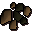 Coal | 1 | 25/128 (19.53%) | if npc_type = macro_golemguardian_6 if npc_type = macro_golemguardian_5 |
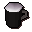 Dwarven stout | 1 | 1/6 (16.67%) | otherwise |
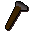 Hammer | 1 | 5/39 (12.82%) | otherwise |
| Dwarven stout | 1 | 13/128 (10.16%) | if npc_type = macro_golemguardian_6 if npc_type = macro_golemguardian_5 |
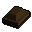 Bronze bar | 1 | 7/78 (8.97%) | otherwise |
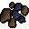 Mithril ore | 1 | 5/64 (7.81%) | if npc_type = macro_golemguardian_6 if npc_type = macro_golemguardian_5 |
| Hammer | 1 | 5/64 (7.81%) | if npc_type = macro_golemguardian_6 if npc_type = macro_golemguardian_5 |
| Bronze bar | 1 | 7/128 (5.47%) | if npc_type = macro_golemguardian_6 if npc_type = macro_golemguardian_5 |
| 42 | 2/39 (5.13%) | otherwise | |
| 2 | 2/39 (5.13%) | otherwise | |
| Iron ore | 1 | 2/39 (5.13%) | otherwise |
| 1 | 1/26 (3.85%) | otherwise | |
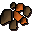 Copper ore | 1 | 1/26 (3.85%) | otherwise |
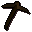 Bronze pickaxe | 1 | 1/32 (3.12%) | if npc_type = macro_golemguardian_6 if npc_type = macro_golemguardian_5 |
| 42 | 1/32 (3.12%) | if npc_type = macro_golemguardian_6 if npc_type = macro_golemguardian_5 | |
| 2 | 1/32 (3.12%) | if npc_type = macro_golemguardian_6 if npc_type = macro_golemguardian_5 | |
| Iron ore | 1 | 1/32 (3.12%) | if npc_type = macro_golemguardian_6 if npc_type = macro_golemguardian_5 |
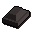 Iron bar | 1 | 3/128 (2.34%) | if npc_type = macro_golemguardian_6 if npc_type = macro_golemguardian_5 |
| 1 | 3/128 (2.34%) | if npc_type = macro_golemguardian_6 if npc_type = macro_golemguardian_5 | |
| Copper ore | 1 | 3/128 (2.34%) | if npc_type = macro_golemguardian_6 if npc_type = macro_golemguardian_5 |
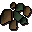 Adamantite ore | 1 | 3/128 (2.34%) | if npc_type = macro_golemguardian_6 if npc_type = macro_golemguardian_5 |
| Gem drop table table | see table | 1/64 (1.56%) | if npc_type = macro_golemguardian_6 if npc_type = macro_golemguardian_5 |
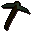 Adamant pickaxe | 1 | 1/128 (0.78%) | if npc_type = macro_golemguardian_6 if npc_type = macro_golemguardian_5 |
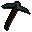 Rune pickaxe | 1 | 1/128 (0.78%) | if npc_type = macro_golemguardian_6 if npc_type = macro_golemguardian_5 |
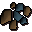 Runite ore | 1 | 1/128 (0.78%) | if npc_type = macro_golemguardian_6 if npc_type = macro_golemguardian_5 |
Locations
This NPC is not placed on the map by the map files (it may be spawned by scripts, e.g. during quests, or be a variant).